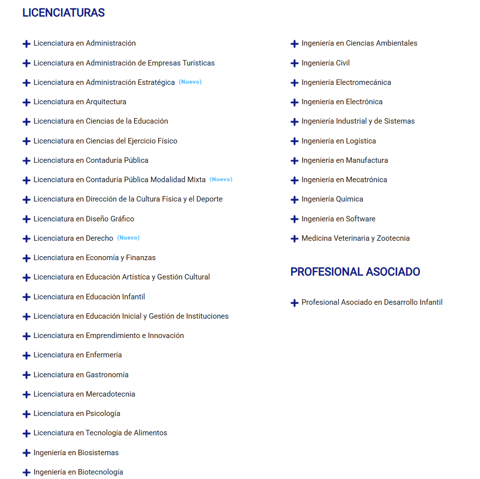
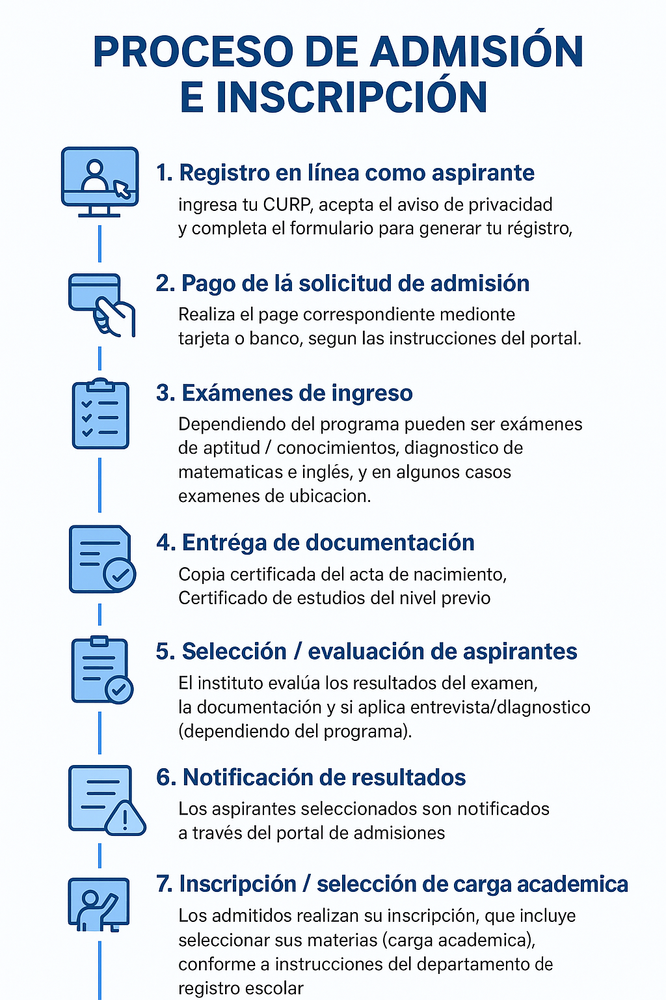
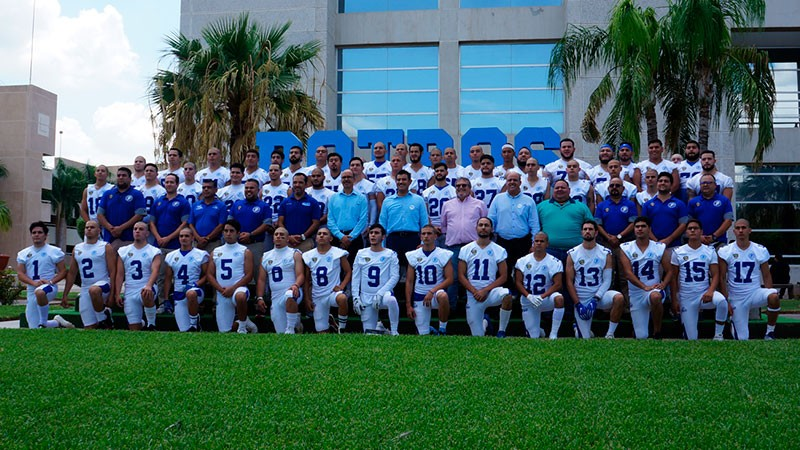

ㅤㅤㅤㅤㅤㅤㅤㅤㅤㅤTRAYECTORIA DE ITSON
ㅤ

¿QUE ES ITSON?
El Instituto Tecnológico de Sonora (ITSON) es una universidad pública estatal ubicada en el sur del estado de Sonora, México. Fue fundada en 1955 y es una de las instituciones educativas más importantes del noroeste del país.
Itson tambien cuenta con campus en distintos lugares del estado de sonora en (Navojoa, Guaymas, Empalme, Ciudad Obregón: Campus Centro y Campus Náinari.)
OFERTA EDUCATIVA
Licenciaturas en áreas como Ingeniería y Tecnología, Ciencias Económicas y Administrativas, Ciencias Sociales, Derecho, Psicología, Salud, Artes y Humanidades.
Posgrados: Maestrías, Doctorados y especialidades profesionales.
Programas técnicos: Profesional Asociado y programas tetramestrales en algunas carreras.
PROCESO DE ADMISION E INSCRIPCION
En la siguiente imagen se muestra el proceso de admision e inscripcion:
INVESTIGACION Y DESARROLLO
El ITSON impulsa proyectos en agricultura y recursos naturales, biotecnología, ciencias del comportamiento, ingeniería y software, salud pública y desarrollo social. Cuenta con centros de investigación y laboratorios especializados

VINCULACION E INTERNACIONALIZACION
EL Instituto Tecnologico de Sonora mantiene convenios con instituciones de México, Latinoamérica, Estados Unidos y Europa. Promueve movilidad estudiantil, intercambios académicos y estancias profesionales.
CULTURA, DEPORTE Y COMUNIDAD
Ofrece actividades deportivas (fútbol, atletismo, béisbol, etc.), artes (teatro, danza, música), programas de salud mental y proyectos comunitarios y ambientales.
